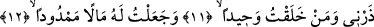
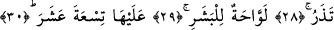

SEN BİLİYOR MUSUN
SEKAR NEDİR?
11. Tek olarak yarattığım o kimseyi bana bırak!
12. Kendisine geniş servet ve
13. Gözü önünde duran oğullar verdiğim,
14. Kendisi için (nimetleri önüne) serdikçe serdiğim (o kimseyi bana bırak!)
15. Üstelik o (nimetlerimi) daha da arttırmamı umuyor.
16. Asla (ummasın)! Çünkü o, bizim âyetlerimize karşı alabildiğine inatçıdır.
17. Ben onu sarp bir yokuşa sardıracağım!
18. Zira o, düşündü taşındı, ölçtü biçti.
19. Canı çıkasıca, ne biçim ölçtü biçti!
20. Sonra, canı çıkasıca tekrar (ölçtü biçti); nasıl ölçtü biçtiyse!
21. Sonra baktı.
22. Sonra kaşlarını çattı, suratını astı.
23. En sonunda, kibirini yenemeyip sırt çevirdi de:
24. «Bu (Kur’an) dedi, olsa olsa (sihirbazlardan öğrenilip) nakledilen bir sihirdir.
25. Bu, insan sözünden başka bir şey değil.»
26. Ben onu sekara (cehenneme) sokacağım.
27. Sen biliyor musun sekar nedir?
28. Hem (bütün bedeni helâk eder, hiçbir şey) bırakmaz, hem (eski hâle getirip
tekrar azap etmekten) vazgeçmez o.
29. İnsanın derisini kavurur.
30. Üzerinde ondokuz (muhafız melek) vardır.